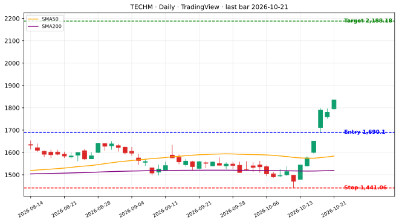
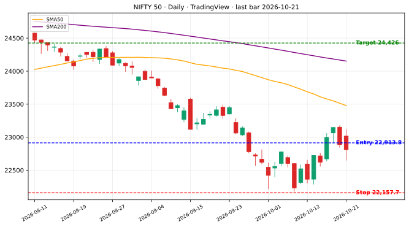
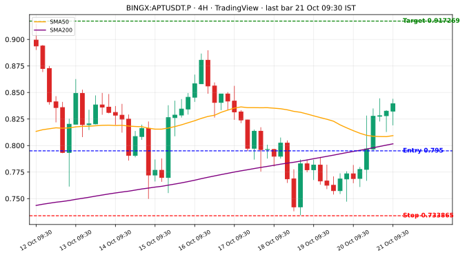
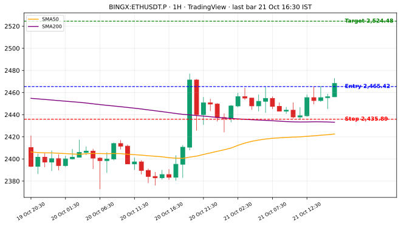
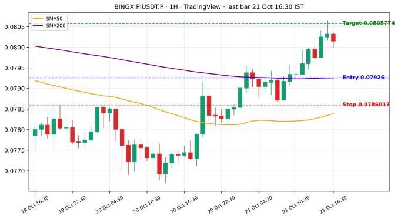

ICT / SMC setups (liquidity sweep → market structure shift → retrace into FVG or order block), with a separate trend-filtered version for each market.
● Live trading is currently active on this strategy


Setup: the low (high) sweeps a prior swing low (high) and closes back inside → within 10 bars, a displacement candle (body ≥ 1.3× its 20-day average) closes beyond the latest swing high (low) → limit entry within 10 bars on a retrace into the fair value gap, or the order block if there is no gap. Exits: ICT stop 2R = stop just beyond the sweep extreme or order block, target 2× risk. 20-day expiry.
| Period | ICT 2R trades | Win % | Total % | PF |
|---|---|---|---|---|
| 2021 | 120 | 52.5 | +237.2 | 1.85 |
| 2022 | 128 | 38.3 | -130.4 | 0.7 |
| 2023 | 96 | 47.9 | +129.0 | 1.63 |
| 2024 | 161 | 49.1 | +187.5 | 1.45 |
| 2025 | 136 | 41.2 | -15.9 | 0.95 |
| 2026 (to 21 Oct) | 85 | 52.9 | +126.3 | 1.58 |
| 2021–23 (fit) | 344 | 45.9 | +235.7 | 1.25 |
| 2024–26 (out of sample) | 382 | 47.1 | +297.9 | 1.3 |
| All | 726 | 46.6 | +533.6 | 1.28 |
With the Nifty 50/200 filter, the ICT 2R full-period PF is 1.28.
Nifty 100 daily with the Nifty 50/200 trend filter. Setups are kept only when the stock's daily ADX(14) ≥ 24 on the last closed bar before entry (ADX(14) < 24 → skip). Trades 5 Jan 2021 – 14 Oct 2026. B = ICT stop, 2R target. Totals are summed per-trade %.
| Version | Filter | Trades | Win % | Total % | PF | Max DD |
|---|---|---|---|---|---|---|
| B | no ADX | 726 | 46.6 | +533.6 | 1.28 | -242.0 |
| B | ADX≥24 | 290 | 49.0 | +366.8 | 1.49 | -106.5 |
| Year | B no ADX: n | Total % | PF | B ADX 24: n | Total % | PF |
|---|---|---|---|---|---|---|
| 2021 | 120 | +237.2 | 1.85 | 60 | +94.8 | 1.62 |
| 2022 | 128 | -130.4 | 0.70 | 51 | -31.9 | 0.82 |
| 2023 | 96 | +129.0 | 1.63 | 46 | +81.3 | 1.82 |
| 2024 | 161 | +187.5 | 1.45 | 62 | +117.4 | 1.78 |
| 2025 | 136 | -15.9 | 0.95 | 39 | +55.6 | 1.75 |
| 2026 | 85 | +126.3 | 1.58 | 32 | +49.6 | 1.59 |
3/6 = fixed 3% stop / 6% target, same ICT entry rules. Totals are summed per-trade %.
| Period | 3/6 trades | Win % | Total % | PF |
|---|---|---|---|---|
| 2021 | 120 | 39.2 | +46.5 | 1.21 |
| 2022 | 128 | 27.3 | -92.2 | 0.69 |
| 2023 | 96 | 41.7 | +62.3 | 1.38 |
| 2024 | 161 | 44.1 | +123.9 | 1.44 |
| 2025 | 136 | 41.2 | +49.0 | 1.2 |
| 2026 (to 21 Oct) | 90 | 52.2 | +151.1 | 2.11 |
| 2021–23 (fit) | 344 | 35.5 | +16.6 | 1.02 |
| 2024–26 (out of sample) | 387 | 45.0 | +324.0 | 1.49 |
| All | 731 | 40.5 | +340.6 | 1.25 |
Without the filter, the full-period PF for 3/6 is 0.97. With the filter: 1.25.
Regime notes for 3/6: sells with the Nifty above its 200-day average lose heavily (3/6 −330%). 2022 also lost money for 3/6.
| Year | Trades | Win % | Total % | PF | Max DD |
|---|---|---|---|---|---|
| 2021 | 146 | 39.7 | +63.9 | 1.24 | -45.9 |
| 2022 | 143 | 30.8 | -64.1 | 0.79 | -132.6 |
| 2023 | 149 | 44.3 | +101.0 | 1.41 | -46.3 |
| 2024 | 173 | 41.0 | +78.4 | 1.25 | -48.5 |
| 2025 | 172 | 33.7 | -52.6 | 0.85 | -96.0 |
| 2026 | 139 | 31.7 | -48.3 | 0.84 | -88.6 |
| All | 922 | 37.0 | +78.4 | 1.04 | -161.5 |
| Profitable years | 3 of 6 · PF range 0.79–1.41 | ||||
| Year | Trades | Win % | Total % | PF | Max DD |
|---|---|---|---|---|---|
| 2021 | 147 | 29.3 | -102.0 | 0.69 | -118.3 |
| 2022 | 151 | 37.1 | +8.5 | 1.03 | -116.7 |
| 2023 | 128 | 23.4 | -143.4 | 0.53 | -150.6 |
| 2024 | 193 | 31.1 | -94.6 | 0.78 | -140.6 |
| 2025 | 175 | 30.3 | -102.3 | 0.73 | -166.8 |
| 2026 | 138 | 52.9 | +227.3 | 2.13 | -63.5 |
| All | 932 | 33.8 | -206.5 | 0.89 | -458.7 |
| Profitable years | 2 of 6 · PF range 0.53–2.13 | ||||
| Year | Trades | Win % | Total % | PF | Max DD | Buy n / total | Sell n / total |
|---|---|---|---|---|---|---|---|
| 2021 | 293 | 34.5 | -38.0 | 0.94 | -85.0 | 146 / +63.9 | 147 / -102.0 |
| 2022 | 294 | 34.0 | -55.6 | 0.91 | -89.4 | 143 / -64.1 | 151 / +8.5 |
| 2023 | 277 | 34.7 | -42.4 | 0.92 | -100.8 | 149 / +101.0 | 128 / -143.4 |
| 2024 | 366 | 35.8 | -16.2 | 0.98 | -131.3 | 173 / +78.4 | 193 / -94.6 |
| 2025 | 347 | 32.0 | -154.9 | 0.78 | -171.0 | 172 / -52.6 | 175 / -102.3 |
| 2026 | 277 | 42.2 | +179.0 | 1.36 | -105.5 | 139 / -48.3 | 138 / +227.3 |
| All | 1854 | 35.4 | -128.2 | 0.97 | -373.0 | 922 / +78.4 | 932 / -206.5 |
| Profitable years | 1 of 6 · PF range 0.78–1.36 | ||||||
| Version | Side | Avg to target | Avg to stop | Median (all) | Median target | Median stop |
|---|---|---|---|---|---|---|
| 3/6 | Buy only | 7.3 | 5.0 | 5.0 | 6 | 3 |
| 3/6 | Sell only | 7.1 | 4.7 | 5.0 | 6.0 | 3 |
| 3/6 | Both sides | 7.2 | 4.9 | 5.0 | 6 | 3.0 |
| Version | Filter | Trades | Win % | Total % | PF | Max DD |
|---|---|---|---|---|---|---|
| A | no ADX | 731 | 40.5 | +340.6 | 1.25 | -144.6 |
| A | ADX≥24 | 292 | 41.4 | +166.0 | 1.32 | -60.8 |
| Year | A no ADX: n | Total % | PF | A ADX 24: n | Total % | PF |
|---|---|---|---|---|---|---|
| 2021 | 120 | +46.5 | 1.21 | 60 | +6.5 | 1.05 |
| 2022 | 128 | -92.2 | 0.69 | 51 | -32.8 | 0.72 |
| 2023 | 96 | +62.3 | 1.38 | 46 | +43.8 | 1.63 |
| 2024 | 161 | +123.9 | 1.44 | 62 | +49.5 | 1.45 |
| 2025 | 136 | +49.0 | 1.20 | 39 | +52.5 | 2.03 |
| 2026 | 90 | +151.1 | 2.11 | 34 | +46.6 | 1.84 |
3/6 PF with ADX 24: 1.25 → 1.32.
| Version | Closed trades | Win % | Total % | PF | Max DD | Open | Total incl. open |
|---|---|---|---|---|---|---|---|
| A: 3% stop / 6% target | 278 | 42.1 | +175.9 | 1.35 | -105.5 | 7 | +179.4 |
| A buy only | 140 | 31.4 | -51.4 | 0.83 | -88.6 | 2 | -52.0 |
| A sell only | 138 | 52.9 | +227.3 | 2.13 | -63.5 | 5 | +231.4 |
Generated 21 Oct 2026 IST.



| Timeframe | Version | Trades | Win % | Total % | PF | Max DD |
|---|---|---|---|---|---|---|
| Daily | B | 59 | 55.9 | +296.2 | 2.34 | -49.6 |
| Daily | A | 76 | 38.2 | +25.4 | 1.17 | -28.5 |
| 4H | B | 464 | 44.0 | +160.8 | 1.15 | -137.6 |
| 4H | A | 509 | 38.7 | +85.5 | 1.09 | -202.1 |
| 1H | B | 1504 | 36.6 | -35.8 | 0.99 | -231.3 |
| 1H | A | 1422 | 37.8 | +148.7 | 1.06 | -235.0 |
| 15m | B | 1527 | 33.3 | -240.0 | 0.85 | -420.2 |
| 15m | A | 777 | 34.2 | -132.2 | 0.91 | -466.5 |
1H showed no edge with any filter (best: A + BTC, PF 1.06). 15m loses. 15m data starts 1 Aug 2026 on TradingView.
| Filter | Trades kept | Win % | Total % | PF | Max DD |
|---|---|---|---|---|---|
| None | 464 | 44.0 | +160.8 | 1.15 | -137.6 |
| ADX(14) < 20 skip | 276 | 45.7 | +114.9 | 1.17 | -104.0 |
| ADX(14) < 25 skip | 170 | 49.4 | +170.8 | 1.44 | -63.2 |
| ADX(14) < 30 skip | 110 | 54.5 | +149.0 | 1.63 | -56.4 |
| BB width < 50-bar avg skip | 176 | 46.6 | +108.9 | 1.26 | -70.8 |
| ADX 25 + BB width together | 77 | 51.9 | +128.7 | 1.85 | -23.5 |
| Year | No ADX: trades | Total % | PF | Max DD | ADX 25: trades | Win % | Total % | PF | Max DD |
|---|---|---|---|---|---|---|---|---|---|
| 2024 (from 3 Feb) | 392 | +445.5 | 1.43 | -150.0 | 206 | 51.9 | +444.8 | 1.83 | -110.3 |
| 2025 | 489 | -85.1 | 0.94 | -389.1 | 214 | 44.9 | -9.0 | 0.99 | -197.8 |
| 2026 (to 21 Oct) | 464 | +160.8 | 1.15 | -137.6 | 170 | 49.4 | +170.8 | 1.44 | -63.2 |
Verdict: the ADX filter is a risk and quality filter, not a profit booster. It halves drawdowns, but 2025 was still flat/negative (−9.0%, PF 0.99) even with it.